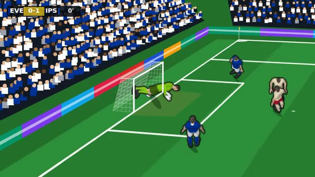
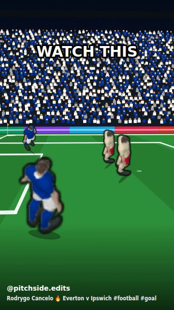
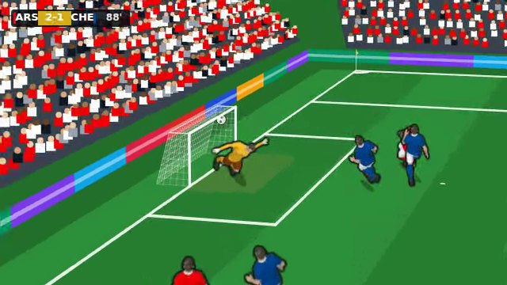
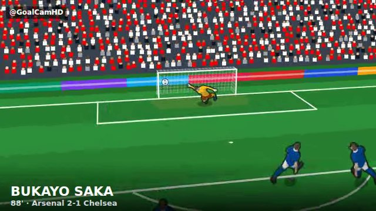

Goal videos, round 3. A proper commentary box with a new voice, more cameras and cuts, videos ready before you reach them, players drawn the right size, more posts with video, and videos of goals from other matches.
The commentator was "almost creepy": one flat robot voice saying "Look at the finish" over and over.
v0.11 used a basic free voice (Piper "low") and only 9 lines, with no idea how the goal went in.
Look forSound on. The call when it goes in, then the co-commentator over the slow-motion replay.

Tapping ▶ showed a ring while the phone made the video. It felt like a download.
The video was only made when you tapped.
Videos are made in the background, one at a time, as soon as a post comes near the screen. They play by themselves when on screen, muted or with sound as you set it. Tapping one that is not ready yet puts it first in the queue. Save video still makes the file to keep. Measured on a slow test machine with no graphics chip: 1.5–4 s to make each, all while you are still scrolling above it.
In the videos everyone looked a bit tall and stretched; from behind the goal the keeper stood below the goal line, as if inside the net.
The players are drawn for the match's camera, which looks down from above. Those drawings hang about a quarter of their height below the point they stand on. From the video cameras, which are low, that made every man about 1.25× too tall, with his feet under the grass.
Each drawing's overhang is measured and taken off: every man is his real height on screen, soles on the grass. Seen in stills from every camera: the keeper now sits under the crossbar.
Every club video was the same cut, and every page posted the same angle.
There was one cut per kind of account.
Three new cameras: a spider-cam high behind the scorer, a low pitch-side camera at the goal line, and a close shot. Each account cuts its goals one of three ways, fixed by its name, so two accounts rarely post the same video. Clubs: live on TV, then two replays from different cameras. Highlights pages: another angle live, then a slow replay. Fans and team-mates: the phone in the stand. New: TikTok edits for meme and TikTok pages, tall, slowing right down for the strike, with captions like WAIT FOR IT, UNREAL, ONE MORE TIME.

A match gave one or two videos: your goal, and the highlights.
New accounts: @GoalCamHD (a YouTube goal channel) and two TikTok edit pages, @pitchside.edits and @footyloops. New video posts: fans filming from the stand, a team-mate's "what a finish brother", highlights pages with another angle, meme pages ("the keeper's family watching this back:"), and videos of team-mates' goals from your club, fans, pages and memes. A few more posts per match. Measured over 30 test matches: goal videos 17 → 29.
"videos for other games on social media would make it feel more real".
Other matches are simulated as a score and the scorers, so there is no recording. The game now makes one for each goal: a short, believable move (a run in on goal, a header from a cross, a long-range strike, a cut-back tapped in, or a penalty), the same every time for the same goal, in the right kits, with the right scorer and score. It plays through the same cameras, cuts and commentary as your goals. Highlights pages, the league account and meme pages post them on the England tab: winners, equalisers, braces, hat-tricks and big wins. Measured: over 8 test weeks, 19 of 85 England posts carry a video. 200 made goals checked: every one goes in between the posts and under the bar, the keeper does not reach it, the scorer strikes it from where he stands, and nobody stands in the net.


/admin/sound-board → "Goal video commentator". Any line can be replaced with a better take (a recorded voice, an ElevenLabs take) and the videos use it at once. The script that made them is scripts/commentary/generate.py; change a line in lib/star/goalClip/commentary.ts and run it again.
Seen in the real game (signed out, made-up players, one 1-goal match and one 2-goal match):
Not seen: the England tab's videos after a match week (the phone is locked early in a career), an iPhone, or a fan-cam post. One video stopped once while still on screen, and the cause was not found.
Each line is recorded in advance, so it cannot know the scorer.
Open. It would need a recorded name for every player.
Free, offline, no voice actor. It reads with energy but it does not scream "GOOOAL".
Replace any line on the Sound Board with a real take.
Each video is made on the phone; one at a time so the phone stays smooth.
A tap moves it to the front.
Checked in a test browser only (WebM with sound). An iPhone should make MP4 with sound (worked out from the code, not seen).
A recording stops about 1.5 s after the goal (so no long celebrations) · recordings stay on the phone that played the match · "The League" posts lower-league matches as Premier League · run star_legend_shares.sql and star_hall_of_fame.sql.
Added: crowd, kick, net and a commentator on goal videos · a speaker button (remembered) · sound inside a saved video · 9 commentator lines on the Sound Board.
Numbers: crowd ~3× louder at the goal · 0.2 s to mix · 267 tests.
Still open from this version: the voice (replaced in v0.12) · no names · not heard on an iPhone.
Added: every goal recorded as you play · real goal videos in the feed from three cameras · highlights reels · Save video · Goal Replays play the recording.
Numbers: 7–15 KB a goal · 266 tests.
Added: one-hand keeper saves, catches, parries and fumbles · team-mates take touches and shoot, pass, head, block and clear with their own legs · the Animations test page and its dials · Settings → Look → Animations: New | Old.
Fixed: a caught ball stayed where the keeper stood while he slid away.
Numbers: outcome counts identical over 5,200 seeded chances (a look-only change).
Still open from this version: the 3D keeper has no catch-hold or get-up · a caught ball can sit slightly off the gloves in the classic view · strikes may still be subtle on a phone · four questions for you on that page.
Changed: every career is 20 seasons (no "Do you go again?" from 33) · the career overview is the end screen.
Added: "Final season" warning after season 19 · "The final whistle" after season 20 · the Hall of Fame on the title screen · the new All seasons page, with a New | Old switch.
Fixed: the last season's Ballon d'Or and awards were never counted · a season's row named the wrong club after a summer move · three playtest finds.
Numbers: 20 seasons · 0 careers lost by starting again · 108 → 15 KB per Hall career · 246 tests.
Still open from this version: star_hall_of_fame.sql to run · the world does not age.
Fixed: trial free kicks and penalties too hard · five-a-side keepers never dived · no way back from several screens · Goalie Mode scrolled.
Added: dribble passes with green/amber/red rings · knuckleball, power shot and keeper howlers (test match only) · New / Old switches for keepers and dribble runs.
Numbers: top corners v a 90 keeper 26% → 43% · trial free kicks 36% → 48% · 243 tests.
Still open from this version: listed under Known issues above.
Fixed: five-a-side could freeze solid mid-match. Added: dev cheats for testing · real extra power for owning your own club.
Fixed: Goalie Mode's pitch never drew. Added: other players on the pitch · penalty · free kick with a real wall.
Fixed: the aim sat about 0.42 m from the cursor. Added: first-time strike · near/far post · shot names.
Added: Goalie Mode in the Casino · a stadium behind the goal.
Fixed: scoring was halved · chances match their own name. Added: Simulate · up to 60 versions per chance type.